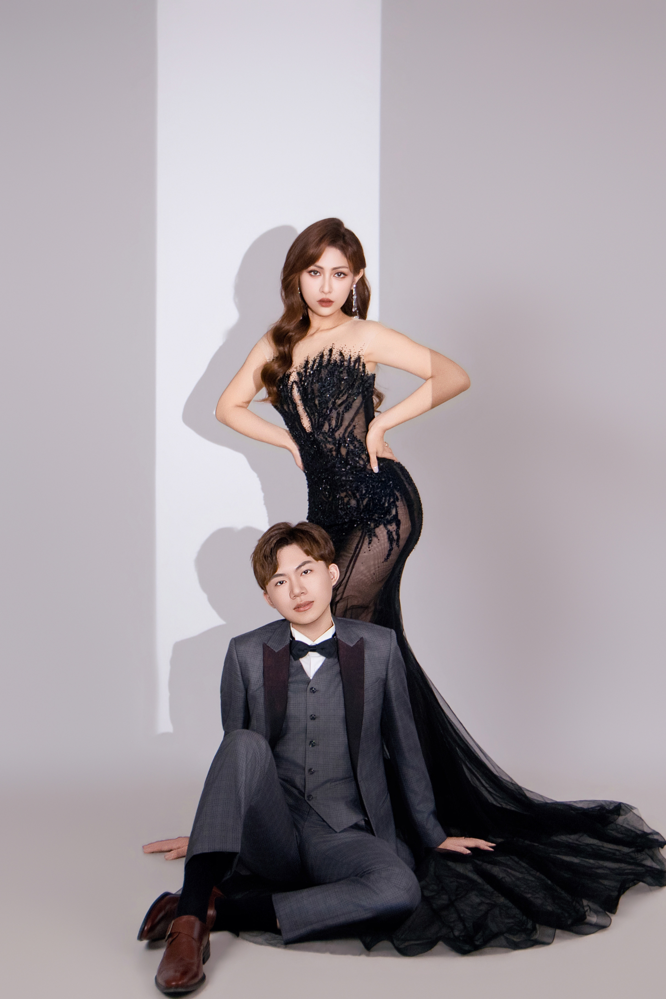
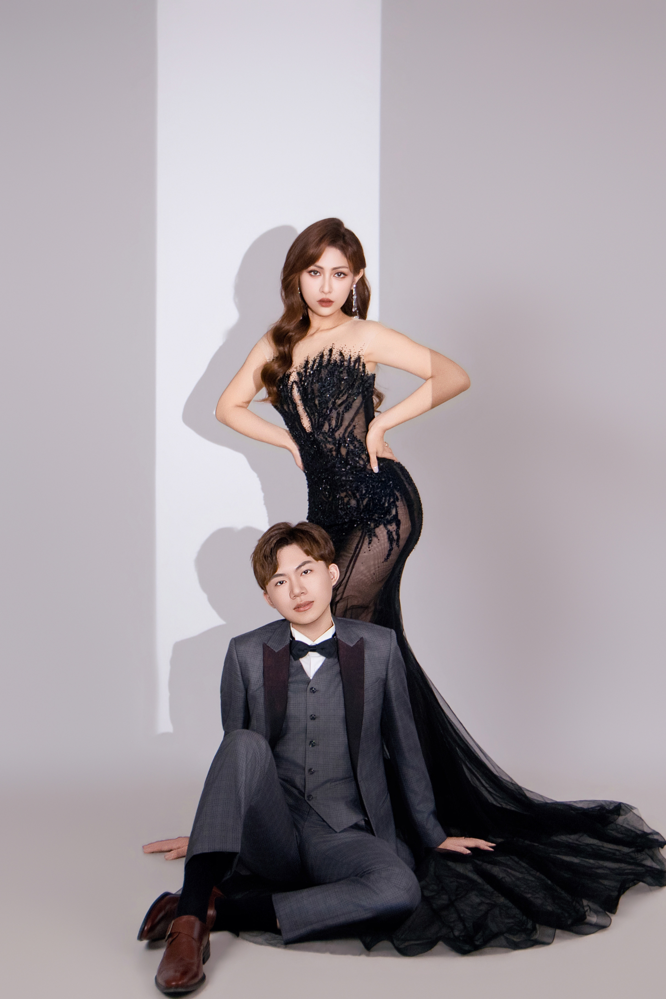

✦ Love is not just looking at each other, but looking in the same direction.” ✦
Sometimes, love is simply walking together.
🏡 地址｜高雄市前鎮區林森四路189號(萊特薇庭高雄館)
🚗 開車｜圖書館旁邊有停車場
🚆 大眾運輸1-自行搭｜可搭至三多商圈捷運站 走路12分鐘
🚌 大眾運輸2-搭接駁｜接送點在左營高鐵站
(等統計完再確定集合上車時間)


 
